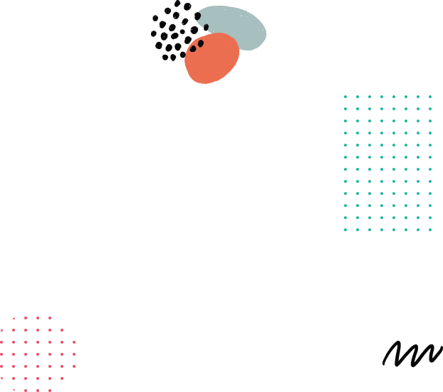

Ferme zéro carbone
La ferme qui révolutionne la production de banane
Des vitroplants sains, homogènes et performants — issus d'un modèle agricole propre, traçable et résilient.




Notre engagement
Une agriculture innovante et responsable
FRESH'O est une ferme zéro carbone dédiée à la production de vitroplants de banane de haute qualité. Nous combinons biotechnologie végétale, énergie propre et gestion durable des ressources pour offrir aux producteurs, industriels et institutions une solution fiable, moderne et respectueuse du climat.
- Plants certifiés, exempts de maladies et parasites
- Énergie 100% renouvelable (solaire et biogaz)
- Traçabilité complète du laboratoire au champ
Pourquoi FRESH'O
Nos atouts pour une filière banane performante
Des vitroplants de qualité supérieure, produits dans le respect de l'environnement et livrés avec un accompagnement technique complet.
-
Qualité sanitaire garantie
Plants certifiés, exempts de virus, champignons et nématodes grâce à nos protocoles stricts de contrôle.
Certifié -
Rendements élevés et prévisibles
Homogénéité variétale pour une production régulière. Jusqu'à +30% de rendement vs rejets traditionnels.
+30% rendement -
Production bas carbone
Énergie solaire, biogaz et optimisation des ressources naturelles pour une empreinte environnementale minimale.
Zéro carbone -
Traçabilité complète
Suivi de chaque lot depuis le laboratoire jusqu'à la livraison au champ. Certificat sanitaire inclus.
100% traçable -
Partenariats durables
Accompagnement technique et commercial à long terme pour les producteurs, coopératives et institutions.
Long terme
Nos solutions
À qui s'adressent nos vitroplants ?
Nous accompagnons chaque acteur de la filière banane avec des solutions adaptées à ses besoins spécifiques.
-
 ProducteursAccompagnement terrain
ProducteursAccompagnement terrainProducteurs & Coopératives
Plants homogènes, calendrier de livraison maîtrisé et accompagnement technique personnalisé pour optimiser vos rendements.
Commander -
 IndustrielsStandards internationaux
IndustrielsStandards internationauxIndustriels & Exportateurs
Volumes sécurisés, conformité aux standards internationaux et qualité constante pour vos opérations à grande échelle.
Nous contacter -
 InstitutionsProjet structurant
InstitutionsProjet structurantInstitutions & Bailleurs
Projet aligné sur les objectifs nationaux de souveraineté alimentaire et de transition écologique. Dossier complet disponible.
Demander le dossier
Notre processus
De la sélection au champ : 5 étapes de qualité
Chaque vitroplant FRESH'O suit un processus rigoureux pour garantir une qualité optimale à la livraison.
-
Sélection
Identification et prélèvement de pieds-mères sains et performants pour garantir la qualité génétique.
-
Multiplication in vitro
Culture en conditions stériles en laboratoire pour obtenir des milliers de plants génétiquement identiques.
-
Acclimatation en serre
Adaptation progressive des plantules aux conditions environnementales réelles dans nos serres contrôlées.
-
Renforcement racinaire
Développement du système racinaire en pépinière pour assurer une reprise optimale au champ.
-
Livraison & accompagnement
Livraison selon un calendrier convenu avec certificat sanitaire et appui technique à la plantation.


Nos chiffres
FRESH'O en quelques chiffres
-
500K+
Vitroplants par an
-
95%
Taux de survie en acclimatation
-
-40%
Réduction carbone par plant
-
3-5
Variétés disponibles
Nos variétés
Des variétés adaptées à chaque besoin
FRESH'O produit plusieurs variétés de vitroplants de banane sélectionnées pour leurs performances et leur adaptation aux marchés.
-
 DessertGrande Naine • Williams
DessertGrande Naine • WilliamsVariétés Dessert
Qualité gustative exceptionnelle et rendement élevé. Idéales pour le marché local et l'exportation.
-
 PlantainCorne • French Sombre
PlantainCorne • French SombreVariétés Plantain
Forte demande sur le marché local avec une robustesse exceptionnelle. Parfaites pour la consommation domestique.
-
 ExportCavendish • FHIA-17
ExportCavendish • FHIA-17Variétés Export
Calibre standardisé, résistance aux maladies et cycle de production court. Conformes aux marchés internationaux.
Prêt à transformer votre production de banane ?
Que vous soyez producteur, industriel ou institution, FRESH'O vous accompagne avec des vitroplants de qualité et un modèle zéro carbone.
Notre impact
Un impact mesurable sur toute la filière
FRESH'O contribue au développement économique, environnemental et social de la filière banane au Sénégal et en Afrique de l'Ouest.
- Économique — Augmentation des rendements et création d'emplois qualifiés
- Environnemental — Réduction des émissions CO₂ et optimisation de l'eau
- Social — Formation des producteurs et inclusion des femmes et jeunes

Écosystème
Ils nous font confiance
Nous travaillons en étroite collaboration avec des partenaires publics, privés et académiques.